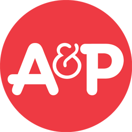

대표 로고대표 브랜드 마크
대표 로고대표 브랜드 마크A&P
A&P(The Great Atlantic & Pacific Tea Company)는 한때 미국 최대 식료품 소매업체였던 역사적 슈퍼마켓 체인으로 2015년 파산·청산되었다.
최종 업데이트
A&P는 어떤 브랜드인가
A&P(The Great Atlantic & Pacific Tea Company)는 1859년 미국 뉴욕에서 차와 커피 유통으로 출발한 식료품 체인이다. 20세기 전반 미국을 넘어 세계 최대 소매 기업으로 군림했고, 1930년대에는 전국 1만5천여 개 점포와 연 29억 달러 매출로 미국 식료품 지출의 약 10%를 장악했다.
1915년부터 1975년까지 미국 최대 식료품 소매상 자리를 지켰으나, 1979년 독일 텡겔만 그룹으로의 경영권 매각과 2015년 두 번째 파산·청산이라는 두 전환점을 거쳐 156년 역사를 끝으로 소멸했다.
A&P는 어떻게 봐야 할까
한때 세계 최대 소매상이던 A&P의 몰락은 규모의 우위가 영속적 해자가 아님을 보여주는 표본이다. 창업자 하트퍼드 형제의 저비용·자체 제조·현금판매 원칙이 황금기를 만들었지만, 1960년대 이후 점포 현대화와 스캐닝·전산 재고 같은 기술 투자에 뒤처졌고, 성장하던 서부 시장 진입과 우량 입지 확보에 실패하며 경쟁력을 잃었다.
1970~80년대 과중한 부채와 가격 상승, 낡은 매장이 겹치면서 월마트·타깃 같은 디스카운트 업태에 시장을 내주었다. 한국 독자에게 이는 대형마트에서 이커머스·창고형·온라인 식료품으로 이어지는 소매 진화의 보편 법칙을 압축한다.
선도자라도 원가 규율과 업태 혁신을 동시에 갱신하지 못하면 후발 저가 모델에 자리를 내준다는 교훈이다.
A&P는 어떻게 시작되고 성장했나
19세기 중반 미국은 도시 인구가 급증하고 철도망이 깔리며 유통 근대화가 시작되던 시기였다. 1859년 조지 헌팅턴 하트퍼드와 조지 길먼은 뉴욕 부두에서 중간 도매상을 건너뛰고 차와 커피를 직매입해 저가에 파는 사업을 열었고, 1861년 첫 점포를 낸 뒤 1870년 현재의 사명으로 개칭하며 전국으로 뻗어 나갔다.
첫 번째 결정적 전환점은 1912년 존 하트퍼드가 고안한 '이코노미 스토어'로, 외상·배달을 없앤 표준화 저비용 매장이 1913년 585개에서 1920년 4,500여 개로 폭증했다. 두 번째는 1936년 슈퍼마켓 업태 도입으로, 1930년대 1만5천여 개 점포 정점을 찍었다.
이후 1979년 경영권 매각과 잇단 점포 폐쇄로 1982년 점포가 1천 개 아래로 줄며 쇠퇴가 굳어졌다.
A&P의 브랜드 아이덴티티는 무엇인가
A&P의 핵심 가치는 '좋은 품질을 가장 낮은 가격에'였다. 중간상 제거와 자체 제조·물류 통합으로 독립 점포보다 4.5~14% 싼 가격을 실현했고, 이 원가 규율이 브랜드의 본질이었다.
비주얼 아이덴티티는 강렬한 적색을 기조로 한 패키지와 간판, 아르데코풍 서체로 대표되며, 특히 자체 커피 라인은 1930년대 전국 커피 시장의 4분의 1 이상을 점유할 만큼 상징적이었다. 타깃은 도시와 교외의 보통 가정으로, 자체 발행 생활지를 통해 알뜰한 주부층을 향했다.
브랜드 보이스는 과시 대신 신뢰·절약·실용을 강조하는 서민적이고 정직한 어조였다.
A&P의 대표 제품과 서비스는 무엇인가
취급 품목은 차·커피에서 출발해 식료품 전반과 신선식품, 베이커리, 생활용품으로 확장됐다. 자체 브랜드(PB) 역량이 특히 강해 프리미엄·중급·보급형으로 나뉜 커피 라인과 가공식품 PB, 베이커리 PB 등 다층 자가 상표를 운영했고, 어선과 제빵 공장까지 직접 보유해 수직 통합형 제조·소싱을 구축했다.
채널은 소형 이코노미 스토어에서 대형 셀프서비스 슈퍼마켓으로 진화했다.
A&P는 지금 어떤 상태인가
본사는 미국 뉴저지주 몬트베일에 있었다. 지배구조는 1979년 독일 텡겔만 그룹이 창업가 하트퍼드 가문으로부터 경영권을 인수한 뒤 민영 기업 형태로 운영됐다.
2010년 첫 파산보호를 신청해 2012년 비상장 기업으로 회생했으나, 2015년 7월 약 23억 달러의 부채를 안고 두 번째 파산보호를 신청하며 자산 청산 절차에 들어갔다. 일부 점포는 타 식료품 체인에 매각됐고 나머지는 순차 폐점해, 2016년 말까지 모든 매장이 문을 닫으며 기업은 청산·소멸했다.
현재 영업 중인 동일 법인은 존재하지 않는다.
A&P 로고는 어떻게 변해왔나
대표 로고대표 브랜드 마크
대표 로고 1보관 이미지 1자주 묻는 질문
A&P의 브랜드 아이덴티티는 무엇인가요?
A&P의 핵심 가치는 '좋은 품질을 가장 낮은 가격에'였다.
A&P의 대표 제품은 무엇인가요?
취급 품목은 차·커피에서 출발해 식료품 전반과 신선식품, 베이커리, 생활용품으로 확장됐다.
A&P의 본사는 어디에 있나요?
본사는 미국 뉴저지주 몬트베일에 있었다.
출처와 검증
브랜드명은 한글과 원어를 함께 표기하되 데이터에 없는 표기는 만들지 않습니다. 기원 국가·설립연도는 검수된 정의문에서 확인된 값을 우선하고, 없을 때만 공식 웹사이트 URL이 일치하는 위키데이터 개체의 값을 씁니다.